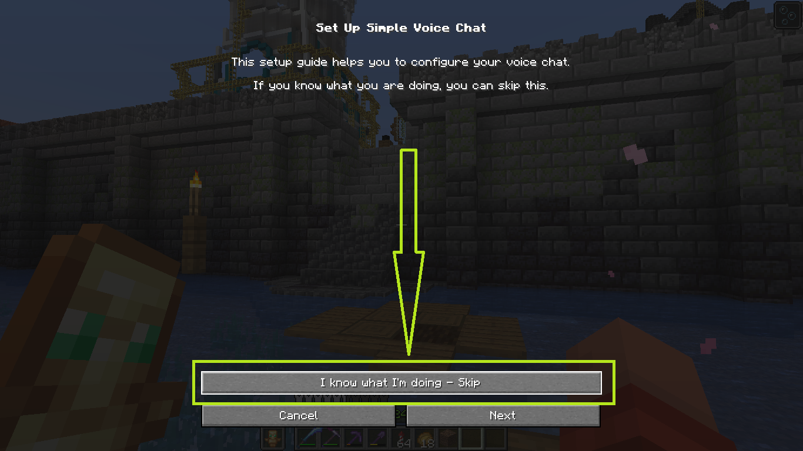

Saturn Pack
Фабрик (Fabric) 1.20.4
Сборка создана на основе модификаций Sodium и других улучшений, оптимизирующих работу игры. Также включены модификации для корректной работы всех плагинов на сервере. Это рекомендуемый вариант.
BadOptimizations-2.1.1
c2me-fabric-mc1.20.4-0.2.0+alpha.11.67
citresewn-1.1.5+1.20.4
emotecraft-for-MC1.20.4-2.4.0-a.f140890e-fabric
enhancedblockentities-0.9.1+1.20.2
entityculling-fabric-1.6.4-mc1.20.4
fabric-api-0.97.0+1.20.4
ferritecore-6.0.3-fabric
ImmediatelyFast-Fabric-1.2.14+1.20.4
indium-1.0.30+mc1.20.4
lithium-fabric-mc1.20.4-0.12.1
modernfix-fabric-5.17.0+mc1.20.4
moreculling-1.20.4-0.24.0
NoChatReports-FABRIC-1.20.4-v2.6.1
noisium-fabric-2.0.3+mc1.20.2-1.20.4
nvidium-0.2.6-beta
plasmovoice-fabric-1.20.4-2.0.9
RPRenames-1.20.4-0.8.2
sodium-fabric-0.5.8+mc1.20.4
vmp-fabric-mc1.20.4-0.2.0+beta.7.139-all
voicechat-fabric-1.20.4-2.5.15
c2me-fabric-mc1.20.4-0.2.0+alpha.11.67
citresewn-1.1.5+1.20.4
emotecraft-for-MC1.20.4-2.4.0-a.f140890e-fabric
enhancedblockentities-0.9.1+1.20.2
entityculling-fabric-1.6.4-mc1.20.4
fabric-api-0.97.0+1.20.4
ferritecore-6.0.3-fabric
ImmediatelyFast-Fabric-1.2.14+1.20.4
indium-1.0.30+mc1.20.4
lithium-fabric-mc1.20.4-0.12.1
modernfix-fabric-5.17.0+mc1.20.4
moreculling-1.20.4-0.24.0
NoChatReports-FABRIC-1.20.4-v2.6.1
noisium-fabric-2.0.3+mc1.20.2-1.20.4
nvidium-0.2.6-beta
plasmovoice-fabric-1.20.4-2.0.9
RPRenames-1.20.4-0.8.2
sodium-fabric-0.5.8+mc1.20.4
vmp-fabric-mc1.20.4-0.2.0+beta.7.139-all
voicechat-fabric-1.20.4-2.5.15
Фордж (Forge) 1.20.1
Сборка оптимизирована, но без OptiFine. Вместо этого используется Embedium (Sodium — порт для Forge). Это позволяет достичь более высокой степени оптимизации игры по сравнению с OptiFine. Кроме того, установлены моды, обеспечивающие работу всех плагинов и текстур.
canary-mc1.20.1-0.3.3
citresewn-1.20.1-5
cloth-config-11.1.118-forge
Connector-1.0.0-beta.43+1.20.1
CullLessLeaves-Reforged-1.20.1-1.0.5
embeddium-0.3.19+mc1.20.1-all
embeddiumplus-1.20.1-v1.2.12
emotecraft-for-MC1.20.1-2.2.7-b.build.50-forge
enhancedblockentities-0.9+1.20
entityculling-forge-1.6.5-mc1.20.1
fabric-api-0.92.1+1.11.8+1.20.1
fastquit-3.0.0+1.20+
ferritecore-6.0.1-forge
FpsReducer2-forge-1.20-2.5
ImmediatelyFast-Forge-1.2.15+1.20.4
modernfix-forge-5.17.0+mc1.20.1
plasmovoice-forge-1.20.1-2.0.9
player-animation-lib-forge-1.0.2-rc1+1.20
rubidium-extra-0.5.4.3+mc1.20.1-build.121
saturn-mc1.20.1-0.1.3.jar
smoothboot(reloaded)-mc1.20.1-0.0.4.jar
voicechat-forge-1.20.1-2.5.15.ja"
citresewn-1.20.1-5
cloth-config-11.1.118-forge
Connector-1.0.0-beta.43+1.20.1
CullLessLeaves-Reforged-1.20.1-1.0.5
embeddium-0.3.19+mc1.20.1-all
embeddiumplus-1.20.1-v1.2.12
emotecraft-for-MC1.20.1-2.2.7-b.build.50-forge
enhancedblockentities-0.9+1.20
entityculling-forge-1.6.5-mc1.20.1
fabric-api-0.92.1+1.11.8+1.20.1
fastquit-3.0.0+1.20+
ferritecore-6.0.1-forge
FpsReducer2-forge-1.20-2.5
ImmediatelyFast-Forge-1.2.15+1.20.4
modernfix-forge-5.17.0+mc1.20.1
plasmovoice-forge-1.20.1-2.0.9
player-animation-lib-forge-1.0.2-rc1+1.20
rubidium-extra-0.5.4.3+mc1.20.1-build.121
saturn-mc1.20.1-0.1.3.jar
smoothboot(reloaded)-mc1.20.1-0.0.4.jar
voicechat-forge-1.20.1-2.5.15.ja"
Ответы на вопросы
Скачайте правильную версию сборки и майнкрафта. Убедитесь, что ваша папка mods пуста. Затем переместите всё содержимое скачанного архива в эту папку. После этого запустите Minecraft.
Это нормальное явление. Чтобы включить звук, вам нужно открыть настройки мода Simple Voice Chat в игре. Обычно это клавиша V, но вы можете изменить её в настройках игры.
После открытия меню вам нужно нажать «I know what I'm doing — skip». Затем подтвердите свой выбор, и звук сразу же появится.

Вы можете. Но за работу других модификаций мы уже не несём ответственности.